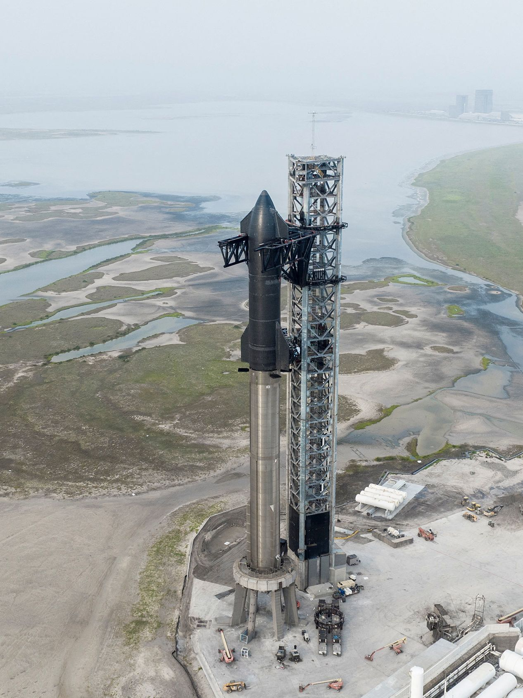

SpaceX lança Starship, foguete mais poderoso já construído
A SpaceX lançou, nesta quinta-feira (20), o Starship, o foguete mais poderoso já construído, em um voo teste do solo. A nave explodiu pouco depois de deixar a base.
O foguete de dois estágios, com 120 m de altura, decolou da base de lançamento Starbase da empresa e das instalações de teste a leste de Brownsville, Texas, em um voo de estreia que planejava uma trajetória de 90 minutos para o espaço.
Uma transmissão ao vivo da SpaceX da decolagem mostrou o foguete subindo da torre de lançamento para o céu da manhã enquanto os 33 motores do propulsor Super Heavy ganhavam vida em uma bola de chamas e nuvens ondulantes de exaustão e vapor d’água. E a explosão logo após, com o foguete no ar.
Mesmo assim, a decolagem foi considerada um sucesso pela SpaceX. A empresa ressaltou, durante a transmissão, que o objetivo do teste era possibilitar que o foguete saísse da base de lançamento.
“A Starship acabou de passar pelo que chamamos de uma rápida desmontagem não planejada”, disse a empresa no Twitter. “Em um teste como este, o sucesso vem do que aprendemos, e o teste de hoje nos ajudará a melhorar a confiabilidade da Starship.”
O primeiro voo teste da Starship foi cancelado ainda na plataforma de lançamento no sul do Texas, nos EUA, na manhã de segunda-feira (17) devido a um problema técnico, atrasando a histórica primeira tentativa de lançamento do veículo.
A SpaceX é conhecida por minimizar contratempos como explosões durante o processo de desenvolvimento de foguetes. A empresa afirma que tais acidentes são a maneira mais rápida e eficiente de coletar dados. Uma abordagem bem diferente da Nasa, que prefere testes lentos e metódicos ao invés de dramáticos.
Clique aqui para acessar a notícia.